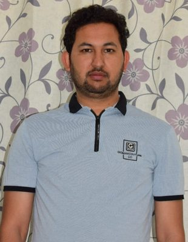
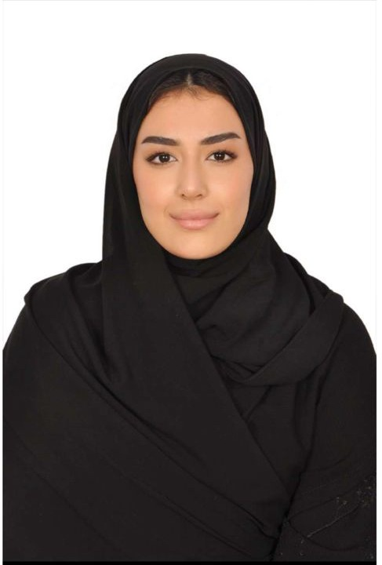

The Knowledge Valley Platform is great for gaining a deep understanding of subject matter. Their unique and interactive live sessions helped me pass the CMA (USA) exam. Sir always gets in touch with me personally to make sure all doubts are cleared. I'm thankful for the guidance of my trainer, Sir Ali Abbas.

In order to pass the CMA exam in such a short duration, I had an excellent experience with Knowledge Valley. Thanks to Sir Ali Abbas's efforts and guidance, for helping me reach this significant point in my professional education, Knowledge Valley has my gratitude.

Knowledge Valley's mentor and faculty are highly knowledgeable and supportive. Sir Ali Abbas's concrete and practical examples ensure that you remember the difficult concepts for all time, and their short notes transform lengthy & complex topics into clear, easy-to-understand concepts.
To obtain the CMA (USA) certification, I believe it takes a lot of struggle, quality study material, and an excellent coach. I got all I needed from Knowledge Valley to be successful in CMA, and I hope the Knowledge Valley staff is successful in everything they do.
I had an amazing experience pursuing CMA (USA) with KV. I merely wanted to share some official comments about my tutor, Mr. Ali — he was absolutely excellent throughout my studies, always responded to my queries promptly, and provided thorough explanations to help me better understand the course content.
For me, clearing CMA-USA was a dream come true. I followed Knowledge Valley's recommendations in order to complete my successful CMA-USA journey. Live CMA-USA coaching sessions with my trainer, Mr. Ali Abbas, were truly excellent.
Clearing my CMA examinations was made possible by the Knowledge Valley team's continuous direction and assistance, for which I am thankful. My ability to identify and improve my weak areas was enhanced by regular practice with the question bank. I received the complete package for success in CMA from Knowledge Valley.

I merely wanted to share some official comments about my tutor, Mr. Ali. He was absolutely excellent during the entire duration of my studies; he always responded to my queries promptly and provided me with thorough explanations to assist me in better understanding the course content.
Knowledge Valley study materials are sufficient to pass the exam, as they're concise, well structured, and comprehensive. Sir always gets in touch with me personally to make sure all doubts are cleared. Thank you, Sir Ali Abbas.
I just wish to express my thanks to the Knowledge Valley team for their support in my CMA journey. Thanks for your support — I highly recommend Knowledge Valley to every CMA aspirant.

Sir Ali Abbas's teaching technique makes study incredibly simple. He also makes complicated topics very interesting.
I had a desire to find a professional course that would advance my career and be finished in a shorter period, so I started CMA. Many doors for career advancement were opened by a CMA education. I had a positive experience with Knowledge Valley — when I needed them, they were there to help.
The easiest way to gauge your abilities before an exam and build your confidence is with Knowledge Valley's multiple choice and essay questions, tests, and performance evaluation system.
Knowledge Valley made my CMA journey easy to follow from start to finish. The live classes and Sir Ali Abbas's real-world explanations made even the toughest topics simple to understand.
What I appreciated most was the constant support — my coordinator kept everything organized, and Sir Ali Abbas was always available whenever I had a question. It made studying for CMA so much less stressful.

Balancing a full-time job with CMA prep felt impossible until I joined Knowledge Valley. The evening batch fit perfectly around my work schedule, and the topic-wise tests kept me studying regularly instead of leaving everything for the last moment.
The short notes from Knowledge Valley made a big difference for me. Instead of reading long books, I could revise each topic quickly and still remember it well. The real business examples in class also made the concepts easy to connect with my own business.
Sir Ali Abbas never just teaches the topic and moves on — he personally checks that you've understood it before going further. As a Finance Manager, his real corporate experience made every lesson practical and easy to apply at work, not just something for the exam.
The mock exams at Knowledge Valley felt just like the real CMA exam, so I walked into the exam center feeling calm and prepared. The regular tests after every topic also helped me see my weak areas early and fix them in time.